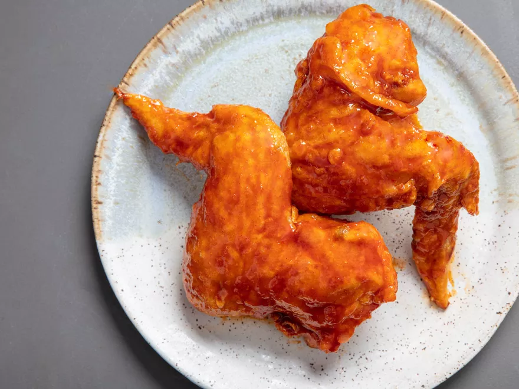

Korean BBQ Sauce

Description
A delicious sweet and spicy sauce. Add to anything.
Ingredients
- 1/4 cup gochujang
- 2 tablespoons soy sauce
- 1 tablespoon rice wine vinegar
- 3 tablespoons dark brown sugar
- 3 medium cloves garlic, minced (about 1 tablespoon)
- 1 teaspoon grated fresh ginger
- 1 tablespoon toasted sesame oil
Steps
-
Combine gochujang, soy sauce, vinegar, sugar, garlic, ginger,
and sesame oil in a large bowl and whisk to combine. Gochujang
can be inconsistent in its thickness. Add up to 2 tablespoons
water until sauce is just barely thin enough to drop off a
spoon with inverted.